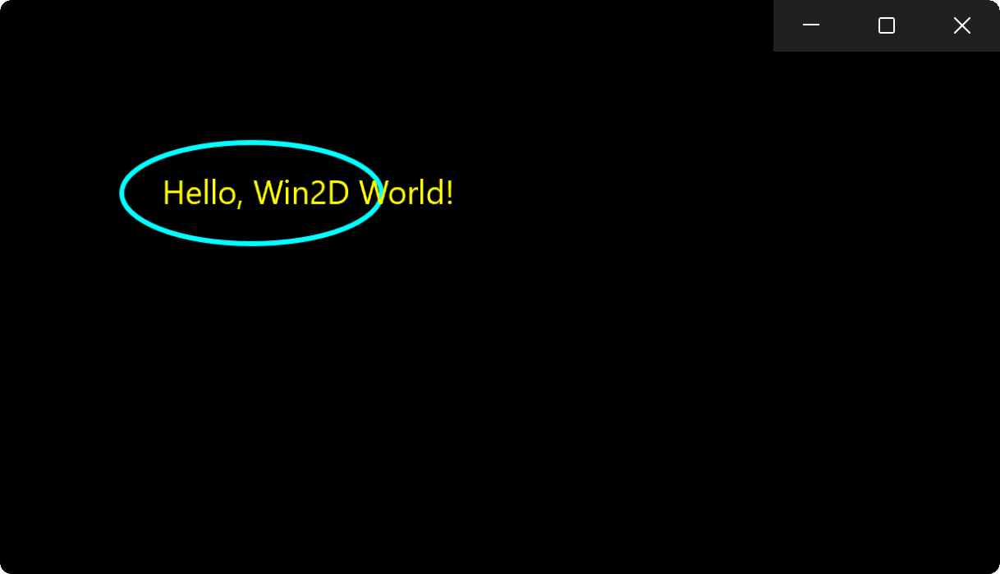

Win2D in a Core App project
The Win2D quickstart and Build a simple Win2D app topics both show Win2D being used in projects that use the XAML user-interface (UI) framework. But you can also use Win2D in a project that doesn't use XAML at all.
This topic shows you how, in a UWP Core App project, you can use a CanvasSwapChain to display Win2D content. And you can run the resulting app on both Windows and Xbox. This type of app is also referred to as a CoreApplication app, or a UWP DirectX app.
Platform APIs: IFrameworkViewSource, IFrameworkView, CoreWindow, CoreApplication, CoreApplicationView, CanvasSwapChain, CanvasDrawingSession
Create and configure a new project
We'll be creating a XAML project just to get started. But we'll be removing all of the XAML from it as we proceed.
In Visual Studio, create a new project from the Blank App (Universal Windows) project template. For language, choose: C#; platform: Windows; project type: UWP.
Then, to set up the project to use Win2D, see Reference the Win2D NuGet package.
Modify the project files
Since we won't be using XAML, go ahead and delete the following files from the project:
App.xaml,App.xaml.cs,MainPage.xaml, andMainPage.xaml.cs.And then add to the project a new Class; name the file
Program.cs.
Add code to Program.cs
- Replace the entire contents of
Program.cswith the following code listing:
// Program.cs
using Microsoft.Graphics.Canvas;
using Windows.ApplicationModel.Core;
using Windows.Graphics.Display;
using Windows.UI;
using Windows.UI.Core;
public sealed class App : IFrameworkViewSource, IFrameworkView
{
private CoreApplicationView view;
private CoreWindow window;
private CanvasSwapChain swapChain;
public IFrameworkView CreateView()
{
return this;
}
public void Initialize(CoreApplicationView applicationView)
{
this.view = applicationView;
}
public void SetWindow(CoreWindow window)
{
this.view.TitleBar.ExtendViewIntoTitleBar = true;
this.window = window;
}
public void Load(string entryPoint)
{
}
public void Run()
{
this.swapChain = CanvasSwapChain.CreateForCoreWindow(
resourceCreator: CanvasDevice.GetSharedDevice(),
coreWindow: this.window,
dpi: DisplayInformation.GetForCurrentView().LogicalDpi);
this.swapChain.ResizeBuffers((float)this.window.Bounds.Width, (float)this.window.Bounds.Height);
using (CanvasDrawingSession session = this.swapChain.CreateDrawingSession(Colors.Black))
{
session.DrawEllipse(155, 115, 80, 30, Colors.Cyan, 3);
session.DrawText("Hello, Win2D World!", 100, 100, Colors.Yellow);
}
this.swapChain.Present();
this.window.Activate();
this.window.Dispatcher.ProcessEvents(CoreProcessEventsOption.ProcessUntilQuit);
}
public void Uninitialize()
{
}
}
public static class Program
{
public static void Main()
{
CoreApplication.Run(new App());
}
}
Note
This example includes a separate Program class containing the Main entry point for the program, which then starts the actual CoreApplication app. But it's not necessary to place the entry point in a separate class; you could instead just move the Main method inside of the App class if you prefer structuring code that way. If you're using C# 10 or above, then the CoreApplication.Run(new App()); expression statement could also be in a top-level statement.
Finishing up
Now you can go ahead and build and run the app, and see the following output:

In terms of the app model, the code in the previous section has an App class that implements the IFrameworkViewSource and IFrameworkView interfaces, which are necessary for a Core App. And the Main function entry point calls CoreApplication.Run to run an instance of that App class.
In terms of the graphics, the code creates a CanvasSwapChain for the main CoreWindow, and draws content into it.
You can extend the sample app above in any way that you like. For example, this could be a good starting point for a simple 2D game.